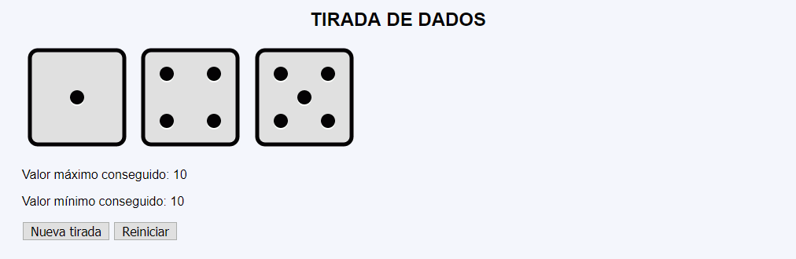
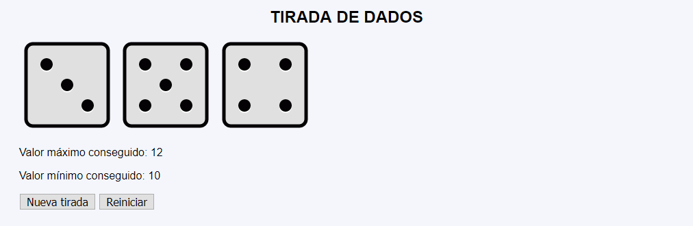
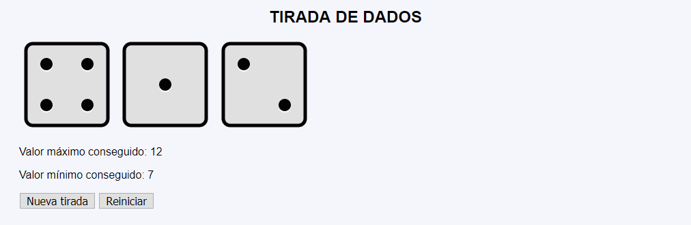

Tirada dados - Ejemplo de programa
Nota: El día del examen los alumnos no tienen acceso a este ejemplo, solamente tienen acceso a las capturas del apartado anterior.
Un ejemplo de programa puede probarse en la ventana siguiente:
En este ejercicio se debe crear un programa que imite el funcionamiento básico de un solitario de dados.



<p>
<img src="img/4.svg" alt="4" width="140" height="140">
<img src="img/1.svg" alt="1" width="140" height="140">
<img src="img/2.svg" alt="2" width="140" height="140">
</p>
<p>Valor máximo conseguido: 12</p>
<p>Valor mínimo conseguido: 7</p>
Nota: El día del examen los alumnos no tienen acceso a este ejemplo, solamente tienen acceso a las capturas del apartado anterior.
Un ejemplo de programa puede probarse en la ventana siguiente: